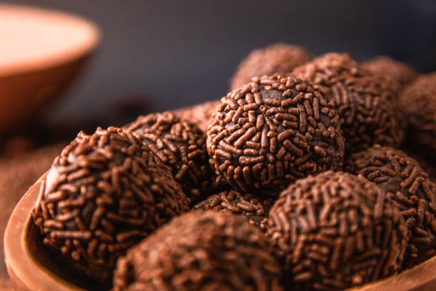

Return to homepage
Brazilian Brigadeiro

Description
Brigadeiro is a tradicional brazilian desert, similar to chocolate truffles.
Ingredients
- 1 (14 ounce) can sweetened condensed milk
- 3 tablespoons unsweetened cocoa
- 1 tablespoon butter
- chocolate sprinkles for rolling
Steps
- Gather all ingredients.
- Combine condensed milk, cocoa, and butter in a medium saucepan over medium heat. Cook and stir until thickened, about 10 minutes.
- Transfer mixture into a shallow bowl and allow to cool.
- Pinch off some of the dough and roll into a small ball; place on a plate. Repeat with remaining mixture, then roll each brigadeiro in chocolate sprinkles.
- Enjoy or chill brigadeiros until ready to serve.